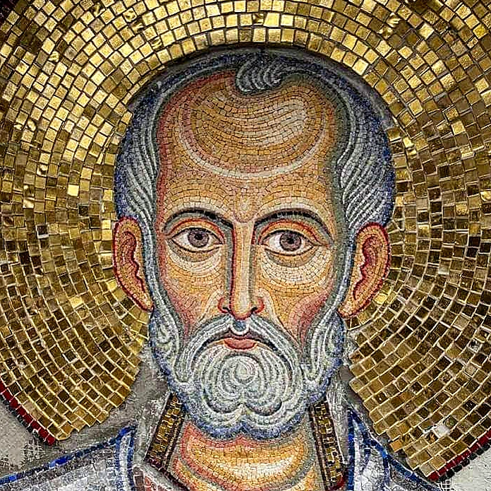

...... მომხმობელთა სახელსა ძისა შენისასა, განჰკურნე იგინი ყოველგვარ უძლურებისა ხორცთასა და სულისა და მიუტევე მათ ყოველნი ბრალნი და ცოდვით დაცემანი, განაშორე ყოველთა მდევართა, მიმომტაცებელთაგან მტერთაგან და აღადგინე სარეცელსა ზედა ცოდვილისასა და სიმრთელითა სულისა და ხორცთაისა, დაამკვიდრე წმინდასა საყდარსა შენსა, რაითა საქმეთაგან კეთილთა, ყოველთა წმინდათა თანა, ადიდებდნენ სახელსა ძისა შენისა, რამეთუ შენდა შუენის ყოველი დიდებაი, თანადაუსაბამოით ძითა შენითა და სულიწმიდით აწ და მარადის და უკუნითი უკუნისამდე, ამინ.
ღირს არს ჭეშმარიტად, რათა გადიდებდეთ შენ, ღვთისმშობელო, რომელი მარადის სანატრელ იქმენ, ყოვლადუბიწოდ და დედად ღმრთისა ჩვენისა. უპატიოსნესსა ქერუბიმთასა და აღმატებით უზესთაესსა სერაბიმთასა, განუხრწნელად მშობელსა სიტყვისა ღმრთისასა, მხოლოსა ღმრთისმშობელსა გალობით ვადიდებდეთ!
დიდება მამასა და ძესა და წმიდასა სულსა, აწ და მარადის და უკუნითი უკუნისამდე, ამინ.
უფალო, შეგვიწყალენ (3-ჯერ)
უფალო, იესუ ქრისტე, ძეო ღმრთისაო, ლოცვითა ყოვლად წმიდისა დედისა შენისათა, ღირსთა და ღმერთშემოსილთა მამათა ჩვენთათა და ყოველთა წმიდათა შენთათა, შეგვიწყალენ ჩვენ, ამინ.
რომელი დამკვიდრებულ არს შეწევნითა მაღლისაითა, საფარველსა ღმრთისა ზეცათაისა განისუენოს.
ჰრქუას უფალსა: ხელის აღმპყრობელი ჩემი ხარი შენ და შესავედრებელი ჩემი, ღმერთი ჩემი, და მე ვესავ მას.
რამეთუ მან გიხსნეს შენ საფრხისა მისგან მონადირეთაისა და სიტყვისა მისგან განსაკრთომელისა.
ბეჭთ-საშუალითა მისითა გფარვიდეს შენ, და საგრილსა ფრთეთა მისთასა ესვიდე; საჭურველად გარე-მოგადგეს შენ ჭეშმარიტებაი მისი.
არა გეშინოდის შიშისაგან ღამისა და ისრისაგან, რომელი ფრინავნ დღისი;
ღუაწლისაგან, რომელი ვალნ ბნელსა შინა, შემთხუევისაგან და ეშმაკისა შუა დღისა.
დაეცნენ მარცხენით შენსა ათასეულნი და ბევრეულნი - მარჯუენით შენსა, ხოლო შენ არა მიგეახლნენ.
ხოლო შენ თუალითა შენითა ჰხედვიდე და მისაგებელი ცოდვილთაი იხილო.
რამეთუ შენ, უფალი, ხარ სასოი ჩემდა და მაღალი გიყოფიეს შესავედრებელად შენდა.
არა შევიდეს შენდა ძვირი, და გუემაი არა მიეახლოს საყოფელთა შენთა.
რამეთუ ანგელოზთა მისთადა უბრძანებიეს შენთვის დაცუად შენდა ყოველთა შინა გზათა შენთა;
ხელთა მათთა ზედა აღგიპყრან შენ, ნუსადა წარსცე ქვასა ფერხი შენი;
ასპიტსა და ვასილისკოსა ზედა ხვიდოდი და დასთრგუნო შენ ლომი და ვეშაპი.
რამეთუ მე მესვიდა, და ვიხსნა იგი და დავიფარო იგი, რამეთუ იცნა სახელი ჩემი.
ხმა-ჰყოს ჩემდამო, და მე ვისმინო მისი და მის თანა ვიყო ჭირსა შინა; ვიხსნა იგი და ვადიდო იგი.
დღეგრძელობითა განვაძღო იგი და უჩუენო მას მაცხოვარებაი ჩემი.